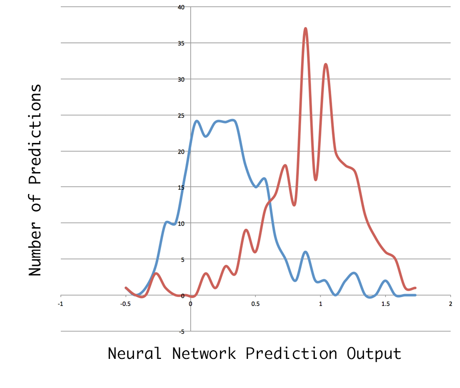

Using historical news and stock data to predict future changes.
How this project works
A dataset was build containing news headlines and summaries of the top 10 holdings of the S&P 500 ticker symbols from Google News ranging from 1 Jan 2015 to 31 Oct 2015, as well as stock price changes for these symbols and dates. This dataset contains nearly 2700 day/symbol records — or 567,912 words.
Corpus Sample
"-K-LDX-ahbYGeGA8QIID" : {
"bodies" : [ "No companies have done this better over the past decade than JPMorgan Chase (NYSE:JPM) and Wells Fargo (NYSE:WFC). The chart below illustrates this ...", ...],
"date" : "7/30/2015",
"headlines" : [ "Buy Bank Stocks Like a Boss", ...],
"symbol" : "WFC"
}
Using a Bag-of-words NLP model, features were extracted from the data, and a data-set created of text features and price changes for each stock & date.
A neural network was created using PyBrain and trained on a sample from this data set.
Vectorized Data Sample
{
"input":[0,0,0,0,0,0,0,0,0,0,0,0,0,0,0,0,0,0,0,0,0,1,0,0,0,0,0,0,0,0,0,0,0,0,1,0,0,0,1,0,0,1,0,0,0,0,0,1,0,1,0,0,0,0,1,1,0,1,1,0,0,0,0,0,0,0,0,0,0,0,0,0,0,0,0,0,1,0,1,0,0,0,0,1,0,0,0,0,0,1,0,0,0,0,0,0,0,0,0,0,0,0,0,1,0,0,0,0,0,0,0,0,1,0,0,0,0,0,0,0,0,0,0,0,1,0,0,0,0,0,1,1,0,1,1,1,0,0,0,1,0,0,0,0,0,1,0,0,0,0,0,1,1,0,0,0,0,0,0,0,0,1,1,0,0,0,0,0,0,0,1,0,0,0,0,0,1,0,0,0,0,1,0,0,0,0,0,0,0,0,0,0,1,0,0,1,1,0,0,0,0,1,0,0,1,1,0,0,1,1,0,1,1,0,1,0,1,0,0,1,0,1,1,0,1,1,0,1,1,1],
"output":{"direction":0}
}
Results
Using the remaining data (not trained), the neural network has been tested and achieved results up to 80% accuracy.
Prediction distribution
Technology Used
Node.js is used to run a web-scraper with asynchronous web requests to fetch the news data from Google News and save it to Firebase (database). It is also used to extract features from the corpus, and create a Bag-of-Words data-set based on the features.
Natural is a Natural Language Processing toolkit for Node.js. It is used to tokenize and stem the corpus.
Python is used to create and train a neural network model using and random sample of < 50% of the data-set.
PyBrain is a Machine Learning framework that is used to create a train the prediction neural network
Project Information
This project was created by Michael Jasper as course-work for CS 6900 at Utah State University.
This page was last updated on 23 Nov 2015.